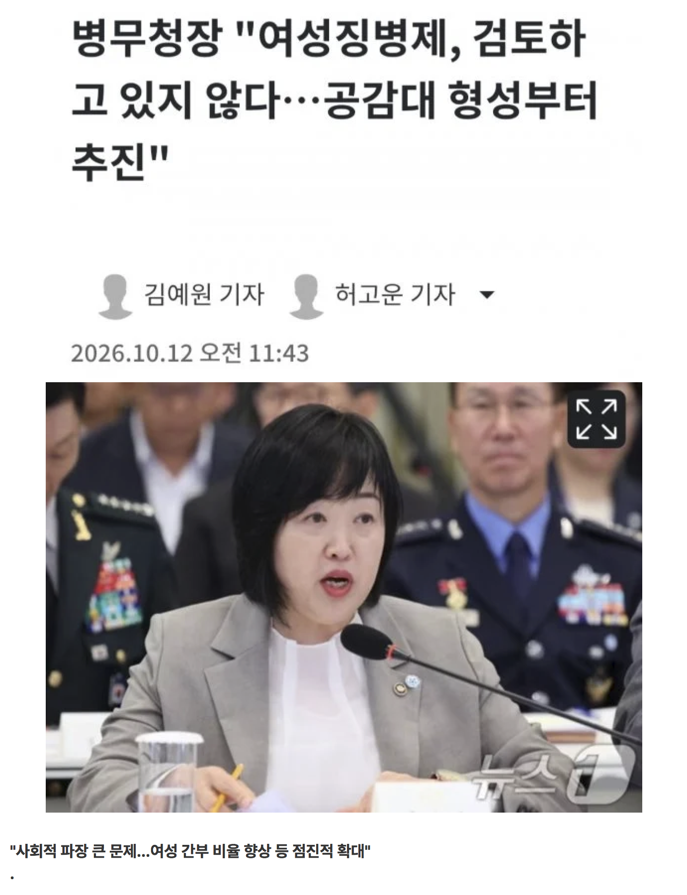

병사는 남자만 강제징용 간부는 여성도 지원가능 병무청 대가리는 여성 ㅋㅋ 보지민국 자랑스럽다
저사람이 욕을 먹는 이유는 성별 이전에 병무청이 일으킨 온갖 병크 터뜨린게 주홍낙인 찍힌게 아닐까 싶다.
23년도에는 병역비리 크게 터진데다가 전력이 안되는 사람을 부대에 넣어버리니깐 사고가 끊이질않고 (현재진행형)
행정하는사람이면 행정가답게 일이라도 잘해야하는데 그걸 못하니 문제.
아들 둔 부모들부터 아들 강제징병 거부 운동 안 벌이고 뭐하냐
더 중요한 말이 있는데???
여자 간부 비율 향상.... ㅆㅂ
일단병무청장을 왜 여자를 뽑냐
40년 이상 전문가임 이미 그걸로 불타는 게시글 있으니 거기로 가도록
여성징병은 공감대 형성이 안돼서 못하지만 여성 간부 비율은 늘려야됨
뭔 개소리지?? 여성 간부 비율이 늘면 국방에 무슨 이득이 있는지 그것부터 공감이 안되는데
병무청 직원 절반 이상이 여자라먀? ㅋㅋ
제일 이해가 안되는게 병무청장이 왜 여자?
여자 붙는건 뭐 거의 장이 여자 아니야?
여자 목욕탕 청소를 남자가 하고 흑인인권협회장을 백인이 맡으려고 하는것 같은 느낌이네
40년 이상 전문가임 이미 그걸로 불타는 게시글 있으니 거기로 가도록
"여성 간부 비율 확대"
어떻게 저렇게 생겼지.....
스타쉽 트루퍼스 영화처럼 군대 갔다온 사람들만 남녀 구분없이 참정권 주면 됨...
간부를 왜늘림?
근데 간호사 집단의 태움이나 여초직장에서 시기 질투 이런게 해결 안되고 군대로 옮겨가면 끔찍하겠다
진심 하루가 멀다하고 자살이랑 총기난사 일어날 듯
갈 꺼였음 병무청에 페인트 뿌려서라도 가는 애들이니까 얼굴 붉히지 맙시다ㅋㅋ
어차피 처음부터 강제징용인데 공감대 형성을 왜해
여성은 타고난 신체가 어쩌고저쩌고....
그럼 간부는? 성차별이 어쩌고저쩌고...ㅅㅂ
검토 좀 하라고
공감 하라고
장애인, 고아도 끌고가면서 왜 여자는 못가는데
사회적 파장이 크다잖냐
근데 장애인 부려먹는게 더 파장이 커야되는거 아닌가
이제 슬슬해야하지않나..
징병제 바로 하는 것보다 간부를 더 뽑아서 여자도 군대 간다는 인식을 심어준다는 발언이구만.
강제라는말이뭔지모르나
남자는 왜 강제로 가는데?
일제에 강제징용의 슬픔을 아직도 지닌 나라
머리에 어항같은거만 씌우면 원피스 천룡인 상이네...
남자들은 공감성이 존나 뛰어나서 자살이며 탈영이며 사건사고가 존나 많았구나
한명이 통나무들고 나머지 9명 쉬게하는걸 그 나머지 9명한테물어서 해결이 되냐?
그동안 우리가 꿀빨았죠? 이젠 저희가 통나무 나눠들겠습니다 <- 하겠냐고
지뢰제거 투입해야함 간첩년
그러네
군대를 못가면 지뢰탐지라도 시키면 되겠다
그건 잘하겠는데
그럼 남성병사없이 여성간부로만 이루어진 군부대를 재편해보는 것부터 시작하죠?
그래도 국정감사에서 저런 질의가 나온다는것 자체가 예전과는 좀 달라진듯
ㅋㅋㅋ
안할거면서 ㅋㅋ
거 시발 남지처럼 일단 보내고 공감하라고~~~
아니 어차피 인원 줄어서 폐새하는 부대 있는데 그쪽에다 다 집어넣으면 되는거지 이성에의한 성추행, 피해 생각은 왜 해 남자끼리만 있다고 성군기위반 안터지는것도 아니고 그쪽에다 여자 간부 쫙 몰아주고 하면 여자끼리만 있음 되잖아
뭐가 심각하게 잘못됐네 ㅋ 하,,, 이 나라는 씨발 스윗피프티 때메 어디까지 망가진건지 감도 안온다
근데 애초에 여성징병은 병무청에서 뭐 권한 있는거임?
간부는 되는데 병사는 왜안댐?
병무청이 문제다 : 아님
국방부가 문제다 : 아님
헌법재판소가 문제다 : 아님
공은 국회가 가지고 있음. 엉뚱한데 화풀이하지 말고 국회에서 시위해야
간부는 성평등을 위해 여성에게도 기회를 주기 위한거고
병사, 공익은 한국남자로 태어난 원죄에 대한 징벌임 ㅋㅋ